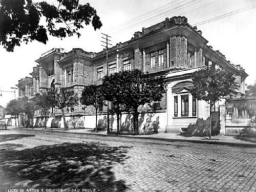
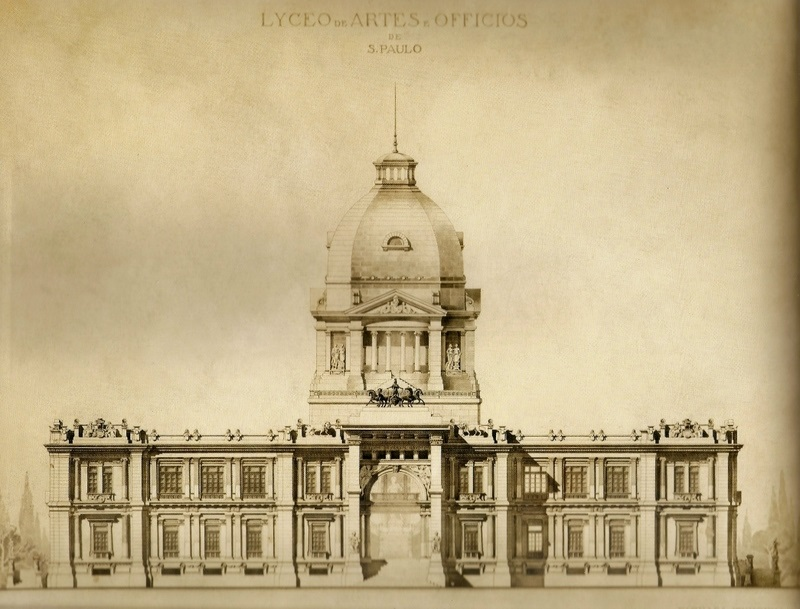
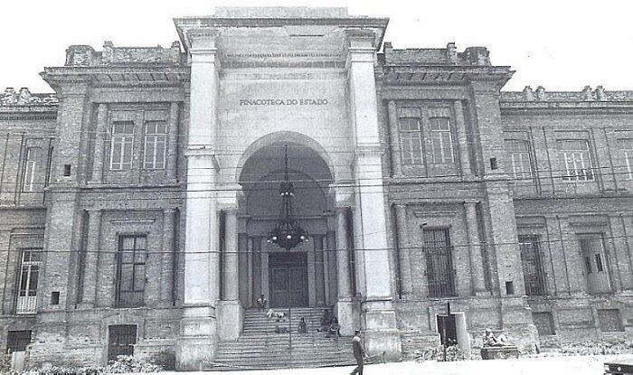

História
Home
Acervo
História
Programação
Visita
Imagens
Fundado em 1905, é o museu de arte mais antigo da cidade
Projeto de Ramos de Azevedo e Domiziano Rossi
A imensa cúpula sobre o grande salão central nunca foi construída



Vídeos
História e Curiosidades
Mudança Logotipo em 2011
Pinacoteca em 2017